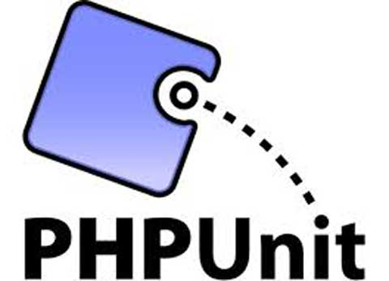

State of Selenium Webdriver in PHP
Кто это такой
- Боднарчук Михаил, веб разработчик
- Компания Codegyre. Киев.
- Автор фреймворка Codeception
- php-webdriver contributor
О чем пойдет речь
- Что делать если вам достался проект на PHP
- Какие есть клиенты Selenium WebDriver в PHP
- Фреймворки для приемочного тестирования на PHP
PHP Сейчас

Почему PHP
- PHP is used by 81.7% of all the websites whose server-side programming language we know.
- PHP считается простым языком для начинающих.
- PHP разработчиков много, их сравнительно легко найти.
- WordPress, Drupal, Joomla, Magento, OSCommerce...
- Facebook, VK, WikiPedia...
Особенности работы PHP
- Обьектно-ориентированый язык
- Для серверной веб-разработки
- Создан чтобы умирать
Типичный PHP
if (isset($_GET['code'])) {
if (strval($_SESSION['state']) !== strval($_GET['state'])) {
die('The session state did not match.');
}
$client->authenticate($_GET['code']);
$_SESSION['token'] = $client->getAccessToken();
header('Location: ' . $redirect);
}
php программист после чтения чужого кода
Темное прошлое
- $ - для каждой переменной
- C-функции для работы со строками и массивыми (str_replace, preg_match,...)
- Ошибки не являются исключениями и выводятся на экран
- Абсолютная обратная совместимость
- Процедурный стиль программирования
- HTML + PHP в одном файле
Современный PHP
namespace Acme\HelloBundle\Controller;
use Symfony\Bundle\FrameworkBundle\Controller\Controller;
class HelloController extends Controller
{
/*
* @Route("/{id}", requirements={"name" = "\w+"})
*/
public function indexAction($name)
{
return $this->render(
'Hello:index.html.twig', ['name' => $name]
);
}
} 
Современный php программист не боится читать код
Светлое настоящее
- Namespaces
- Java-style OOP
- Аннотации (не поддерживаются языком)
- Автолоадинг
- Единый стандарт кодирования PSR
- Единый Package Manager - Composer
И очень светлое будущее
- ReactPHP - аналог NodeJS
- HipHop VM - виртуальная машина
- Zephir - компилятор в C-код
Фреймворки
- Symfony
- Zend
- Yii
- Laravel
- Phalcon
- Silex
- ...тысячи их
Тренды
- Унификация экосистемы
- Переход количества в качество
- Улучшение платформы при сохранении обратной совместимости
- Дорога в enterprise
Selenium Webdriver

WebDriver
- Нет официального клиента
- PHPUnit_Extensions_Selenium2TestCase
- element34/php-webdriver
- instaclick/php-webdriver
- facebook/php-webdriver
- ...webdriver клиентов чуть менее чем фреймворков
PHPUnit_Extensions_Selenium2TestCase
- Часть фреймворка PHPUnit
Самый старыйи популярный клиентOOPинтерфейс- встроенные assert
Демо
$this->url('index.php');
$form = $this->byCssSelector('form');
$action = $form->attribute('action');
$this->assertContains('admin.php', $action);
$this->byName('username')->value('davert');
$this->byName('password')->value('1234');
$form->submit();
$welcome = $this->byCssSelector('h1')->text();
$this->assertRegExp('/davert/i', $welcome);
Минусы
- WebDriver API (partially implemented)
- Свой особый API
- Не документирован
- Нет wait until expected condition
- Нельзя отвязать от PHPUnit
Плюсы
- Стабильный
- Самый популярный фреймворк
- Гибкий
OOPинтерфейс - Экспорт из Selenium IDE
instaclick/php-webdriver
element34/php-webdriver
- Легковесная реализация
- Поддерживает wait, touch, chanied actions
- Ранее разрабатывался в facebook
Демо
$wd->open("https://api.jquery.com/dblclick/");
$iframe = $wd->element(PHPWebDriver_WebDriverBy::CSS_SELECTOR, "iframe");
$wd->moveto(array("element" => $iframe->getID()));
$wd->switch_to_frame($iframe);
$e = $wd->element(PHPWebDriver_WebDriverBy::CSS_SELECTOR, "div");
$clazz = $e->attribute('class');
$this->assertEquals(null, $clazz);
$ac = new PHPWebDriver_WebDriverActionChains($wd);
$ac->doubleClick($wd->element(PHPWebDriver_WebDriverBy::CSS_SELECTOR, "div"));
$ac->perform();
Минусы
- Facebook отказался от этой версии
- Очень странный API
- Поддержка IDE хромает
- Ужасная реализация explicit wait
- Требует напильника
- Документации мало
Плюсы
- instaclick/php-webdriver используется в Mink / Behat
- Upload файлов с клиента
- Поддерживается в актуальном состоянии
facebook/php-webdriver
- Новая версия webdriver биндингов
- Готова стать стандартом в PHP
- Реализация близка к Java клиенту
Демо
$search = $wd->findElement(WebDriverBy::id('js-command-bar-field'));
$search->click();
// typing into field
$wd->getKeyboard()->sendKeys('php-webdriver');
// pressing "Enter"
$wd->getKeyboard()->pressKey(WebDriverKeys::ENTER);
$firstResult = $wd->findElement(WebDriverBy::cssSelector('ul#list li'));
$firstResult->click();
Минусы
Нестабилен(версия 0.4), API меняется- Нет документации
Плюсы
- Наиболее полная реализация WebDriver
- В активной разработке командой Facebook
- Большинство решений можно легко портировать с Java
- Стандартный API с Java
- LocalFileDetector - upload файлов с клиента
- explicit wait, touch events, ...
Сравним их!
Закажем билеты на сайте https://booking.uz.gov.ua/
Мы написали тесты для всех клиентов
Заметки
- Facebook/php-webdriver самый высокоуровневый
- Для PHPUnitSelenium/element34/instaclick пришлось писать свой explicit wait
- element34/instaclick очень похожи, но есть принципиальные различия
- Для работы с клавиатурой element34/instaclick нужно знать сам протокол
Выводы
- Facebook/php-webdriver понравился больше всего
- PHPUnitSelenium - хорошая поддержка ide
- element34/php-webdriver - ужасно
- instaclick/php-webdriver - ещё хуже
Бенчмарки на коленке
- PHPUnitSelenium - Time: 12.3 seconds, Memory: 4.50Mb
- FacebookWebdriver - Time: 5.17 seconds, Memory: 3.50Mb
- InstaclickWebdriver - Time: 11.66 seconds, Memory: 3.00Mb
- Element34Webdriver - Time: 5.74 seconds, Memory: 3.50Mb
Testing Frameworks
- PHPUnit
- Behat
- Codeception

- классический юнит-тест фреймворк
- стандарт де факто для юнит тестирования
- работает со вcеми реализациями WebDriver
- не оптимизирован для приемочного тестирования
- Релизация Cucumber на PHP
- Есть PageObject extension
- Использует высокоуровневый фреймворк Mink (аналог Capybra)
- Mink использует element34/webdriver
- Эмулирует события через javascript
Feature
Feature: Search
In order to see a word definition
As a website user
I need to be able to search for a word
Scenario: Searching for a page that does exist
Given I am on "/wiki/Main_Page"
When I fill in "search" with "Behavior Driven Development"
And I press "searchButton"
Then I should see "agile software development"
Step c PageObject
/**
* @Given /^(?:|I )change my password$/
*/
public function iChangeMyPassword()
{
// $page = get page...
$page->login('kuba', '123123')
->changePassword('abcabc')
->logout();
}
Codeception
- Тестирования от лица пользователя
- Высокоуровневый API
- PageObject/StepObject из коробки
- Легок в освоении и использовании
Тест
$I = new WebGuy($scenario);
$I->wantTo('create wiki page');
$I->amOnPage('/');
$I->click('Pages');
$I->click('New', '.nav');
$I->see('New Page');
$I->fillField('title', 'Hobbit');
$I->fillField('body', 'By Peter Jackson');
$I->click('#save');
$I->see('page created');
Тест с PageObject / StepObject
function createPage($title, $body)
{
$this->amOnPage('/pages/new');
$this->fillField(NewPage::$titleField, $title);
$this->fillField(NewPage::$bodyField, $body);
$this->click(NewPage::$saveButton);
}
$I = new WebGuy($scenario);
$I->wantTo('create wiki page');
$I->createPage('Hobbit', 'By Peter Jackson');
$I->see('page created'); // notice generated
Что где используется
- PHPUnit ← PHPUnit_Extensions_Selenium2TestCase
- Behat ← Mink ← instaclick/php-webdriver ← facebook/php-webdriver (old)
- Codeception ← facebook/php-webdriver
Выводы
- facebook/php-webdriver ближе всего к полной поддержке протокола
- PHPUnit_Extensions_Selenium2TestCase - самый популярный для legacy apps
- element-34/php-webdriver или instaclick/php-webdriver - активно использовался до появляния второй версии facebook/php-webdriver
Что использовать
- То что дают
- То что предоставляет фреймворк
- Тщательно подходить к выбору фреймворка
Спасибо за внимание. Боднарчук Михаил @davert
- Сравнение клиентов github.com/DavertMik/WebDriverDemos
- PHPUnit Selenium phpunit.de/manual/3.7/en/selenium.html
- Instaclick github.com/instaclick/php-webdriver
- Facebook php-webdrivergithub.com/facebook/php-webdriver
- Behat behat.org
- Codeception codeception.com
- спасибо Сереже Акулинину и Диме Жарию за помощь в подготовке демок